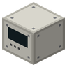
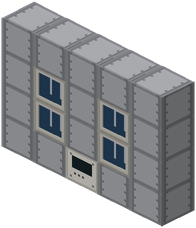
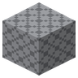
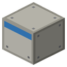

Стойка жизнеобеспечения
- Ключ: Контроллер стойки жизнеобеспечения
- На схеме 5×4×1
- CO₂ + 4H₂ → CH₄ + 2H₂O

Рама 5×4 в стене герметичной зоны с четырьмя гнёздами модулей, как стойки ECLSS МКС. Электролиз разлагает воду на O₂ (в зону) и H₂; CDRA снимает CO₂ цеолитом; Сабатье восстанавливает CO₂ водородом в воду и метан. Водорода электролиза хватает только на 57 % CO₂, поэтому кислорода возвращается около половины — ровно как на станции. Регенерация возвращает 93.5 % метаболической воды. Метан с кислородом баллона уходит в топливный бак метаноксом.
В нишах модулей видна работа: вентилятор CDRA, пузыри у электродов, раскалённый змеевик Сабатье, поршень насоса.
Формируется ударом инженерного молота по ключевому блоку. Если структура собрана с ошибкой, молот назовёт первую неверную клетку.
Материалы
| Иконка | Блок | На схеме | Диапазон |
|---|---|---|---|
| Контроллер стойки жизнеобеспечения (ключевой) | 1 | 1 | |
 | Рама стойки СЖО | 15 | 15 |
 | Модуль электролиза воды (OGS) или Модуль Сабатье или Модуль удаления CO₂ (CDRA) или Модуль регенерации воды (WRS) или Глухая панель стойки | 4 | 4 |
Схема
Слой 1 из 4 (y = 0, вид сверху)
Слой 2 из 4 (y = 1, вид сверху)
Слой 3 из 4 (y = 2, вид сверху)
Слой 4 из 4 (y = 3, вид сверху)
ключевой блокниз сетки: лицевая сторона ключевого блока